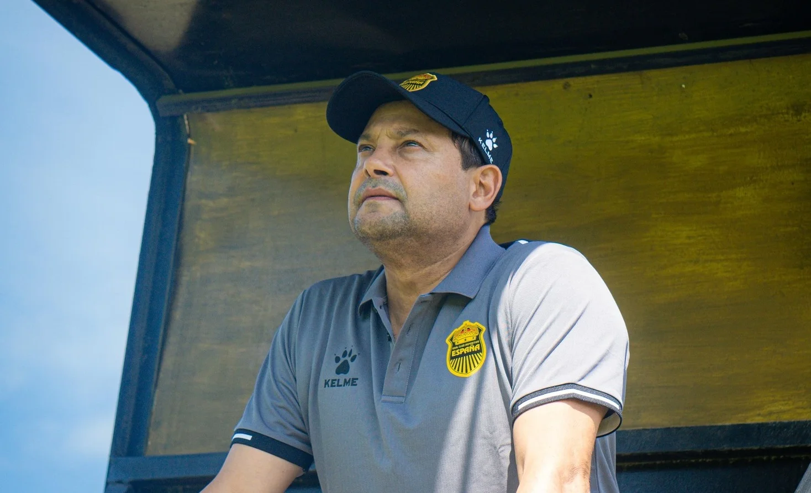
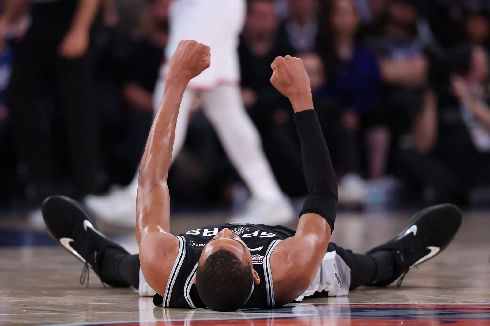
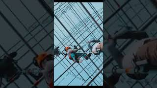
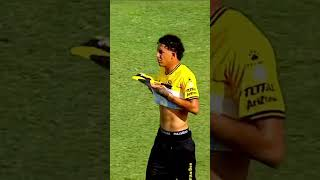

Los Irreverentes
Del Fútbol
Debate, estadísticas y toda la actualidad del fútbol nacional e internacional con la verdad por delante. No apto para sensibles.
Espacio publicitario disponible
Demuestra Tu
Conocimiento
Participa en nuestras quinelas semanales, vota por tu pronóstico y compite contra el resto de la comunidad irreverente.
Quien ganara la liga nacional 2026


Nuestros Contenidos

Spurs se comen la Gran Manzana y dejan a Nueva York sin celebración
Los San Antonio Spurs dieron un golpe de autoridad en el Madison Square Garden al imponerse en un partido que, al igual que los anteriores de la serie, se definió en los minutos finales. Con este...

Keylor Figueroa prefiere la H y manda a la M a la USA
El mayor jugador en proyeccion del futbol, talvez hasta en sentido de centroamerica, jugador crack c...
Análisis Táctico: La Defensa en Línea de Cuatro
En este artículo exploramos cómo los equipos modernos utilizan la defensa en línea de cuatro para ma...

Mercado de Fichajes: Los Mejores Movimientos del Año
Repasamos los fichajes más importantes de la temporada, analizando cómo estos movimientos han impact...
Perfil de Jugador: La Evolución de los Delanteros Modernos
Los delanteros de hoy en día no son solo goleadores. En este análisis profundo, examinamos cómo ha e...
Equipos en Forma: Quién Lidera la Temporada
Analizamos los equipos que están demostrando el mejor rendimiento en la temporada actual. Desde su e...
Opinión: El Futuro del Fútbol Profesional
En esta columna de opinión, reflexionamos sobre cómo está evolucionando el fútbol profesional. Desde...
El Muro de Cristal: ¿Es el "Cholismo" una religión o una condena?
El Atlético de Madrid no juega al fútbol, sobrevive a él. Ha construido su identidad sobre una defen...
Últimos Videos
No te pierdas los debates ardientes y los highlights más rápidos.
dereck moncada lesionado y se pierde juegos con la "H"
DERECK MONCADA SE LESIONA Y PODRÍA PERDERSE LO QUE RESTA DE 2026; LIVERPOOL PIDE A KEYROL FIGUEROA
Liverpool quiere de vuelta a Keyrol Figueroa

"POLLO" CONTRERAS HACE MIERD** ESTADIOS EN SAN PEDRO SULA

Nixón Cruz a rehabilitación
NIXON CRUZ ES SOMETIDO A REHABILITACIÓN; GRAMA DEL MORAZÁN QUEDA DESTRUIDA POR CONTRERAS
BENGUCHÉ ANUNCIA SU SALIDA DEL OLIMPIA TRAS FALLOS ANTE CARTAGINÉS; ESPINEL SE PELEA CON LA PRENSA
HONDURAS A LAS PUERTAS DE SER CAMPEÓN MUNDIAL A NIVEL SUB-15
Contacto
Déjanos tu mensaje y te responderemos lo antes posible
Apoya Nuestro Trabajo
Si te gusta nuestro contenido y quieres ayudarnos a seguir creciendo, puedes invitarnos un cafecito. ¡Todo aporte suma y nos permite crear más!